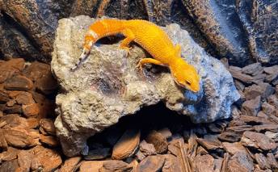

Leopard Gecko
豹紋守宮
兩棲
爬蟲
豹紋守宮有著肥肥的尾巴，水汪汪的大眼睛眨呀眨，加上偶而露出的魔性微笑，那可愛又親人的模樣、讓他成為全世界最有人氣的爬蟲類寵物！
擁有眾多美麗的品系變化、以及容易飼育等特點，都是豹紋守宮的魅力所在。
來更加認識牠吧!
特寵小檔案
- 學名：Eublepharis Macularius
- 分類：瞼虎科（擬蜥屬）
- 產地：中亞地區，如巴基斯坦、阿富汗和印度等地區
- 成體：約 20～25 公分
- 體重：通常在 50～80 克之間
- 尾巴：約佔其總長度的 1/3，主要是用來儲存養份，並在必要時斷尾逃生
- 壽命：平均 10～15 年，有些能活到 20 年以上
- 價格：大約在台幣 500～10,000 元之間，依品系而有所不同
豹紋守宮是什麼？
守宮可愛的模樣讓人深深著迷，加上溫順親人的性格，使許多人開始飼養守宮，但究竟守宮是什麼呢？守宮名稱的由來為何？其實，守宮是一種屬於瞼虎科中的「擬蜥屬」爬行動物。據說在古代，守宮經常會出現在宮殿、房屋等住家中，且會幫忙吃害蟲，因此被古人認為是一種「守護宮殿」的爬蟲，所以稱之為守宮，台語又稱作「蟮蟲仔」。 除此之外，多數守宮在遇到危險時，還會斷尾逃生，雖然尾巴會再生長出來，但卻不比一開始來的漂亮，因此在守宮飼養的過程中，需要特別注意不要驚嚇到牠們，尤其是守宮上手時，一定要動作小、輕，且從肚子下方扶起，讓他們有安全感！
豹紋守宮吃什麼？
守宮食物與一般壁虎無異，主食是以昆蟲為主，像是：蟋蟀、蟑螂、麵包蟲、大麥蟲、蠶等，甚至也會吃乳鼠；除此之外， 。也需要定期為守宮補充鈣粉、維他命等營養品，約 2～3 天添加 1 次，才不會導致缺鈣，進而造成骨骼變形等狀況而至於守宮多久餵一次，只能說每個「個體」與「品種」都不盡相同，但基本上幼體 1 日 1 次，成體則 2～3 日餵食 1 次。
豹紋守宮有哪些品系？
豹紋守宮的外貌很有特色。原生色的豹紋守宮呈黃褐色，身上有黑色斑點，這也是它名字的由來。但是寵物界的豹紋守宮可不只有原色這一種顏色，豹紋守宮因為遺傳基因較為多樣化，進而造成許多的個體差異，專業的繁育者選育出了超多的顏色基因品系，這些不同基因的名字也起得非常好聽：日蝕、黑夜、陽光、暴風雪、雪花、檸檬霜、雨水白化、川普白化等，就來看看常見的豹紋守宮品系吧！
雖然顏色差異很大，但我們都是豹紋守宮哦！
日焰
Sunglow
超級雪花
Super Snow
暴風雪
Blizzard
貝爾白化
Bell Albino

超級惡魔雪花白酒
Super Snow Diablo Blanco
黑夜
Black Night
電橘
Electric Tangerine

土匪
Bandit
飼養豹紋守宮需要哪些設備？
飼養守宮主要需要準備：飼養箱、底材、加溫墊、躲避屋、水盆、溫濕度計，共6樣設備！
-
飼養箱
首先，飼養箱是養豹紋守宮的必需品，雖然牠對環境要求不高，但為了提供豹紋守宮舒適的生活環境，需要一個至少 30 x 30 x 20 的飼養箱，且不宜過小或過大。因為過小的飼養箱可能會給牠們壓迫感，甚至會因此而無法正常長大；過大的飼養箱若沒有足夠的躲避空間，可能會使牠感到不安。
-
底材
在挑選底材時，建議選擇一個容易清潔的底材，像是：廚房紙巾、赤玉土、椰土等，不過要注意的是，不要為了好看而選用沙類、木屑等細小的底材，因為很容易造成豹紋守宮誤食。曾經就發生過守宮死亡後解剖來看，結果肚子全是沙的慘狀。
-
加溫墊
由於豹紋守宮是變溫動物，代表牠們的體溫會隨著環境溫度而變化，所以加溫需求對於爬蟲來說相當重要，最好的方法就是將加溫墊可以放在飼養箱「底部」的某一側，並讓它們躺在上面取暖。不過要注意的是，溫度要控制好，且不要與守宮直接接觸，以避免守宮燙傷。
-

躲避屋
躲避屋的重要性有 2 點，一是豹紋守宮的天性習慣在遮蔽處找安全感，因此需要提供躲避屋給牠們，如果缺乏隱蔽空間，守宮可能會感到不安，進而對健康產生負面影響，甚至會影響牠們的食慾和行為表現。二是豹紋守宮在脫皮時，若有磨擦系數足夠且表面粗糙的躲避屋，可以幫助牠們順利脫皮。
-
水盆
如同人類一樣，豹紋守宮也需要飲水，所以提供乾淨的水源非常重要，建議可以將水盆放至飼養箱冷區（無加溫墊那區），並隨時保持清潔，以避免細菌孳生。
-
溫濕度計
由於豹紋守宮需要溫度在 25～32 度之間，濕度 40%～70% 之間的飼養環境，因此適當的溫度控制非常重要；而準備溫濕度計，則可以幫助飼主確認飼養箱的溫度是否在適宜範圍內，也需準備紅外線測溫槍，更加確定溫度及濕度，以提供豹紋守宮一個健康的生活環境。
豹紋守宮為何會變白？
- 守宮數個月會脫皮一次；發現守宮的身體變白，就是即將要脫皮的信號。發現將脫皮的徵兆後，請讓飼育箱內保持一定濕度，並放置水盆保持。
- 脫皮如果持續殘留在身上，可能會造成守宮的皮膚發炎、壞死。可以將卡皮的部分浸泡於溫水中，使用沾濕的棉花棒幫助守宮去除脫皮。
- 守宮經常將自己脫下來的皮吃掉，此為正常現象。
豹紋守宮是一種地棲型（在地面生活）的晨昏性（清晨和黃昏時間內活動）動物，其飼養門檻低、環境要求不高、不占空間不吵鬧，再加上可愛溫馴的個性等優點，成為了多數人的首選爬蟲類寵物；且如果你是從未接觸過爬蟲類的新手，豹紋守宮更是入坑推薦的入門爬蟲寵物！
延伸閱讀
- 豹紋守宮怎麼養？豹紋守宮飼養新手從 0 開始！
- 肥尾守宮全攻略：肥尾守宮飼養新手從 0 開始！
- 守宮介紹：守宮是什麼？6 個守宮飼養入門必看須知！
- 守宮種類有哪些？8 種守宮：豹紋、肥尾、睫角全上榜！
- 守宮購買前必看：如何挑選 1 隻健康的守宮？